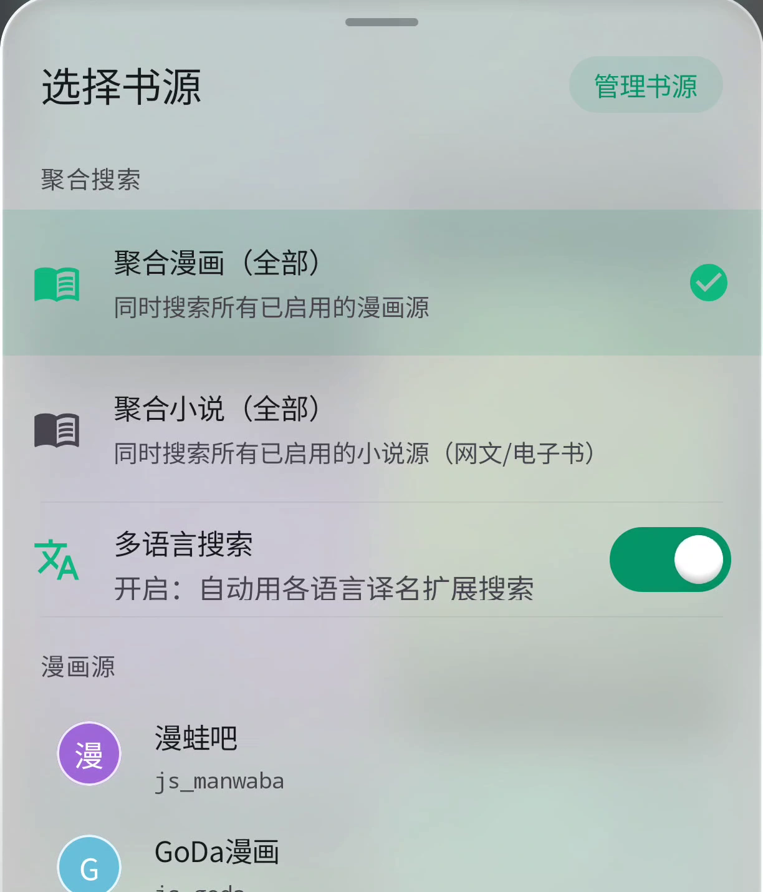
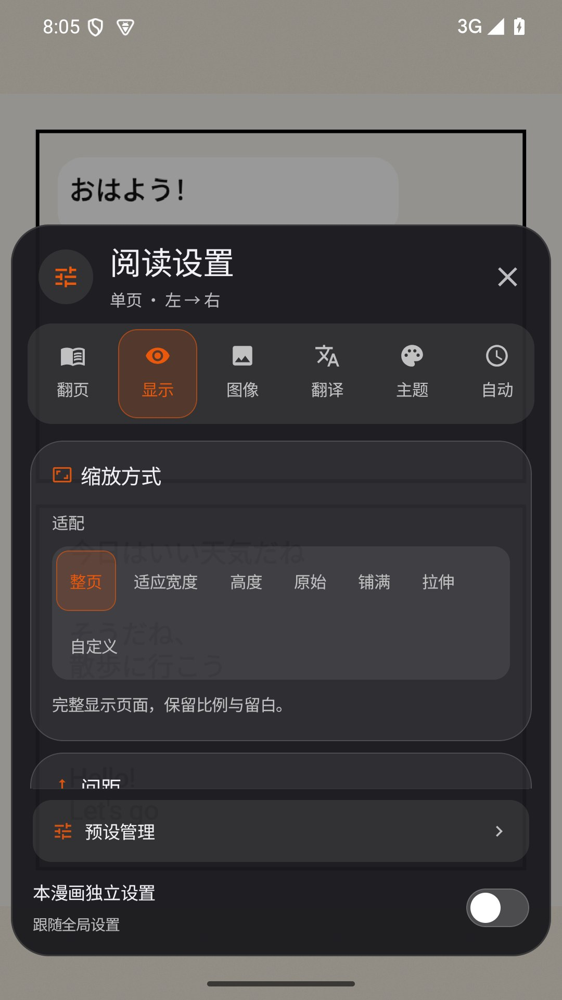
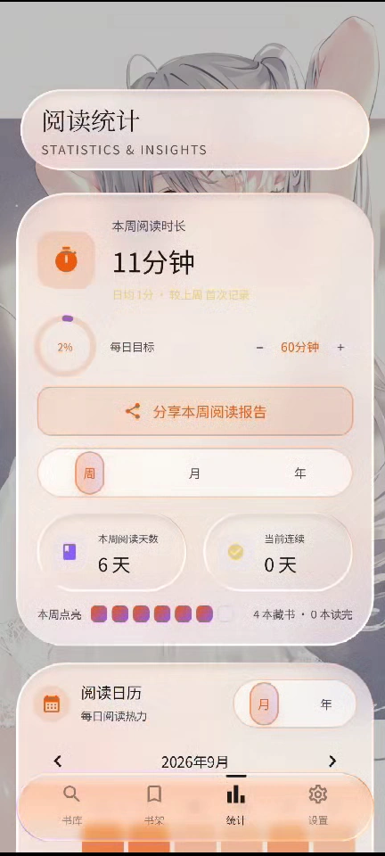

一个书架，收好不同格式
导入 TXT、EPUB、MOBI、AZW、AZW3、PRC、DOCX、FB2、CBZ、ZIP 或 PDF。分类整理藏书、收藏作品，并从上次的进度继续阅读。
TXT、EPUB、MOBI、CBZ、PDF……收藏、书签与阅读进度，都集中在手边。
字号、字体、行距、主题与翻页方式，随你调整。
单页、双页、条漫或滚动，阅读方向也由你决定。
导入 TXT、EPUB、MOBI、AZW、AZW3、PRC、DOCX、FB2、CBZ、ZIP 或 PDF。分类整理藏书、收藏作品，并从上次的进度继续阅读。
小说可调字体、字号、行距、页边距、主题和翻页方式，也能使用 TTS 朗读；漫画可选单页、双页、条漫、滚动和阅读方向。
从已启用的在线书源搜索并下载小说或漫画章节；下载完成后，回到书架即可离线阅读。
搜索、整理、阅读、翻译与统计，Ciallo Reader 把常用的阅读工具放在同一款 Android 应用里。

在书库里搜索小说或漫画，可以一次查询已启用的多个来源，也可以切换到单个来源查看结果。
@css:、@json: 规则。在线来源由第三方提供；来源状态、内容与使用条款以服务方为准。


本地文件和在线下载的作品汇入书架。分类、收藏与续读入口帮助你整理正在看的内容；更换在线来源时，也可以迁移受支持的阅读记录。
在线搜索、在线阅读和网络翻译仍需要连接相应服务。

阅读小说时，可以按屏幕大小、字体习惯和环境光线调整页面。页面布局和翻页效果也能配合自己的阅读节奏。
手机、平板与横屏均有适配；可切换夜间主题与阅读预设，低性能设备也能选择极简画质选项。

漫画阅读器提供多种页面组织和翻页控制。可以根据原作版式、设备方向和个人手势，调整显示与浏览方式。

漫画画质处理可以改善线条观感；翻译流程则把文字识别与译文生成分开，便于了解哪些步骤在本机、哪些步骤需要网络服务。
第三方模型有独立许可；发送翻译请求前，请查看所选服务的数据与隐私条款。

统计页汇总个人阅读情况，让最近的阅读节奏与长期积累都能回顾。
从设备文件选择器导入 TXT、EPUB、Kindle 电子书、漫画压缩包与 PDF。Ciallo Reader 1.3.6 面向 Android 7.0 及以上，当前 Release 提供 arm64-v8a APK。
文字与电子书 TXT 支持章节识别与多种编码；EPUB 可读取目录、封面、元数据和内嵌插图。MOBI、AZW、AZW3、PRC 使用对应电子书解析器；DOCX 与 FB2 提取正文文本。
漫画与文档 CBZ、ZIP 按图片顺序阅读。PDF 按页显示；目前尚不解析 PDF 文本层。
OCR 与气泡检测不离开你的手机；译文由你选择的翻译服务或自定义 API 生成。
在手机上识别漫画画面中的文字。
自动定位对白气泡与文字区域。
使用你选择的翻译服务或自定义 API 生成译文。
可以阅读已导入的本地文件，也可以阅读已下载完成的小说或漫画章节。在线搜索、在线阅读和联网翻译仍需要网络。
不包含。你可以导入自己的文件，或按自己选择的在线来源搜索。网络内容和来源条款由提供方决定。
OCR 和气泡检测在设备上完成；生成译文时会使用你选择的翻译服务或自定义 API。发送前请了解所选服务的数据和隐私条款。
MIT 适用于项目原创源代码。第三方模型、词库及其他注明独立许可的资源仍受各自条款约束。查看第三方许可记录。